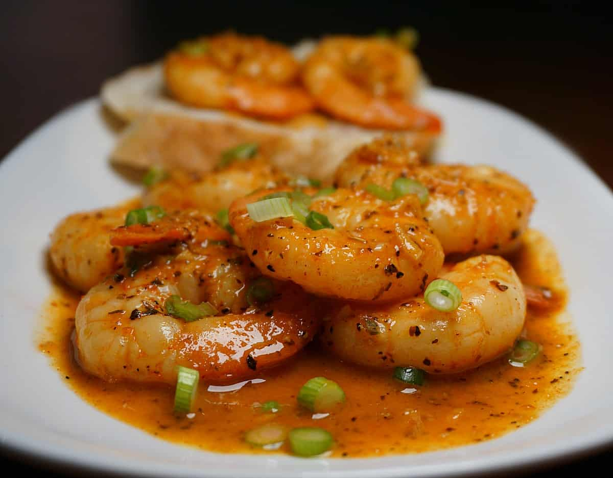

<!DOCTYPE html>
<html lang="en">
<head>
    <meta charset="UTF-8">
    <meta name="viewport" content="width=device-width, initial-scale=1.0">
    <title>Cajun Shrimp/title>
</head>
<body>
    <h1>Cajun Shrimp</h1>
    
    <h2>Description</h2>
    <p>This recipe for Cajun Shrimp was given to me by my father.  During his time in Lousiana, he experienced this dish and would make it for us growing up.  </p>
    <p>In our family we still make this dish during holiday get togethers.  As with many dishes, butter really helps to make this dish great.  Now as we are older,we tend to reduce the total amount of butter.</p>
    <h2>Ingredients</h2>
    <ul>
        <li>5 lbs. Shrimp cleaned, skin on</li>
        <li>2-3 Medium Onions</li>
        <li>4-8 Garlic Cloves</li>
        <li>2 16 oz. Tomato Puree</li>
        <li>8 oz. Italian Salad Dressing</li>
        <li>1/8 cup Lemon Juice</li>
        <li>Italian Seasoning</li>
        <li>1/8 cup Black Pepper</li>
        <li>1/2 - 3/4 lb. Butter</li>
        <li>Olive Oil</li>
    </ul>

    <h2>Steps</h2>
    <ol>
        <li>Saute Onion and Garlic in Olive Oil</li>
        <li>Mince/Blend Onion and Garlic</li>
        <li>Add to pot with Tomato Sauce, Olive Oil, Italian Seasoning, Italian Dressing and Black Pepper over medium heat for 20 minutes</li>
        <li>Place all ingredients into a casserole dish</li>
        <li>Add butter on top</li>
        <li>Bake for 45 minutes at 375° (occasionally stir, ensuring there is enough room for shrimp to expand)</li>
        <li>Add Lemon Juice and serve</li>
    </ol>
</body>
</html>